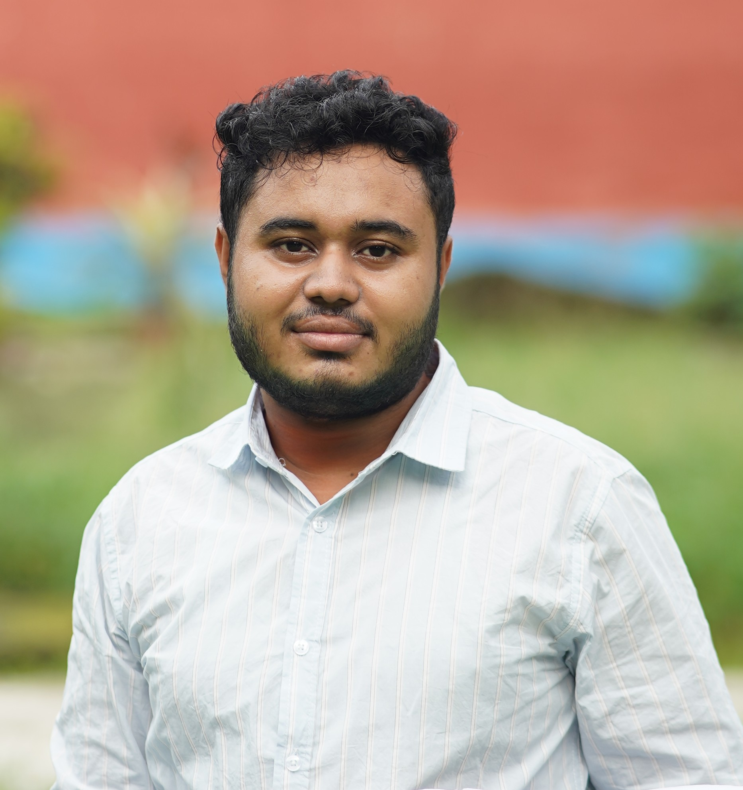

⌗
AutoCAD
Technical drafting, plans and engineering drawings.
I'm MD Forhad Ahamad Firoze, an aspiring Civil Engineer focused on practical engineering, technical drawing, surveying and continuous learning.

I am a Diploma in Civil Engineering student at Bogura Polytechnic Institute, Bangladesh.
My interests include structural engineering, AutoCAD, surveying, quantity estimation, construction materials and modern construction technology. I enjoy turning technical concepts into practical solutions and developing the skills needed for a successful engineering career.
I believe good engineering combines accuracy, responsibility, creativity and a willingness to keep learning.
Technical drafting, plans and engineering drawings.
Fundamental surveying concepts and field practice.
Planning concepts, layouts and construction documentation.
Understanding quantities, materials and project calculations.
Reading and developing technical structural drawings.
Analytical thinking, teamwork and continuous learning.
Bogura Polytechnic Institute · Bangladesh
Developing practical and technical knowledge across civil engineering disciplines.Conceptual residential planning and technical drawing project.
A growing collection of academic and practice drawings.
Practice project focused on quantities, materials and calculations.
For professional opportunities, collaboration or simply getting in touch, feel free to reach out.
civilengineerforhad@gmail.com